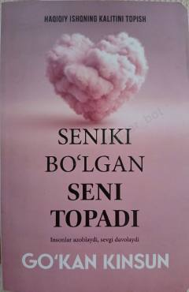

SBHaqiqiy ishqning kalitini topish va sevgida o'zingni anglash haqida kitob.
Bu kitob haqiqiy ishqning kalitini topishga bag'ishlangan bo'lib, muallif Go'kan Kinsun sevgi va insoniy munosabatlar haqida chuqur fikrlar bayon etadi. Kitobda 'Odamlar azob beradi, ishq esa davolaydi' g'oyasi markaziy o'rin tutadi. Mavlono hikoyatlari va nafis eslatmalar orqali o'quvchi haqiqiy sevgining mohiyatini anglashga undaydi.